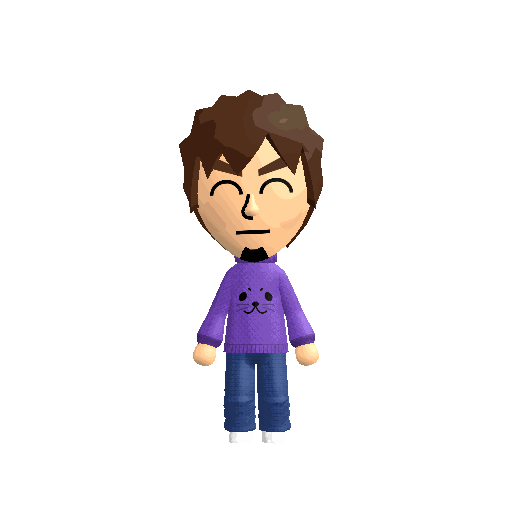

Persona
Curioso per natura. Parto da una domanda semplice su come funziona qualcosa e finisco per leggere molto più di quanto servisse. Mi piace imparare lingue straniere: ne parlo cinque.
Diciamo che non ho ancora smesso.

Ho cominciato smontando software per vedere cosa c’era dentro. Volevo capire come funzionavano i programmi e provare a creare qualcosa di mio.
Con il tempo mi sono interessato sempre di più alla risoluzione dei problemi: capire cosa non funziona, trovare una soluzione e vedere il risultato nel programma che sto costruendo. È ancora la parte che mi piace di più.
Curioso per natura. Parto da una domanda semplice su come funziona qualcosa e finisco per leggere molto più di quanto servisse. Mi piace imparare lingue straniere: ne parlo cinque.
Siti e applicazioni web, logica lato server e database relazionali: dai CRUD all’automazione industriale. Mi interessano lo sviluppo web, i database e l’automazione.
Contenuti visivi per i social e progettazione di interfacce. Sistemo colori, spaziature e piccoli movimenti finché codice e grafica non sembrano fatti dalla stessa persona.
Ho frequentato l’IIS A. Volta di Sassuolo, dove nel 2026 mi sono diplomato in Informatica e Telecomunicazioni. Per il progetto di diploma ho realizzato Beautify, un gestionale web in PHP e MySQL.
Un gestionale vero, non il solito esercizio.
Ho lavorato come sviluppatore web freelance e consulente SEO tra Sassuolo, Scandiano e dintorni. Ho realizzato siti per officine, centri estetici e negozi di utensileria.
Mi sono occupato delle interfacce, della pubblicazione e dell’indicizzazione sui motori di ricerca. Ho seguito anche la configurazione delle pagine social aziendali.
Il cliente non vuole sapere che framework usi. Vuole che il sito si trovi su Google.
Mi occupo anche di grafica: realizzo contenuti visivi per i social e progetto interfacce. È la parte visiva del mio lavoro, che affianco allo sviluppo software.
Codice e grafica: due lati dello stesso lavoro.
Durante l’Erasmus+ ho lavorato a Starbotica, a Siviglia: attività informatiche e didattiche in un ambiente internazionale, in inglese e spagnolo ogni giorno.
Il supporto IT comprendeva ambienti Windows, account Active Directory, reti locali e periferiche. Mi sono occupato della risoluzione di problemi hardware e software e della documentazione tecnica.
Sono tornato con più autonomia e uno spagnolo molto più sciolto.
Apprendista software e automazione: ho supportato la programmazione PLC e lo sviluppo di software per sistemi industriali.
Ho scritto script T-SQL su Microsoft SQL Server per backup, gestione e archiviazione dei dati, e ho studiato come si collegano logica PLC, software applicativo e database.
Il codice che fa muovere le macchine vere ti insegna a non dare niente per scontato.
Studio Ingegneria Informatica all’Università di Modena e Reggio Emilia, e intanto continuo a costruire cose mie.
Non tutto è andato liscio al primo colpo. Però è andato.
Una cosa la consegno quando la userei io. Senza diventare pignolo: non ti rimando indietro una mail per una virgola.
Se una cosa non va te lo dico subito, non il giorno prima della consegna.
Puoi farmi qualsiasi domanda, anche quella che ti sembra stupida. Probabilmente me la sono fatta anch’io.
Un terminale che risponde davvero. Digita help, oppure usa i comandi qui sotto.
// oakvx / portfolio
oakvx@portfolio:~$ whoami
Gabriele Lucia — oakvx
Digita help per iniziare.